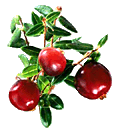

Уропатогенные штаммы E. coli ответственны примерно за 90% внебольничных неосложнённых циститов у женщин. Как оказалось, применение экстракта клюквы может оказывать отрицательное влияние на адгезивные свойства уропатогенных штаммов E. coli.
Уропатогенные штаммы E. coli ответственны примерно за 90% внебольничных неосложненных циститов у женщин. Как оказалось, применение экстракта клюквы может оказывать отрицательное влияние на адгезивные свойства уропатогенных штаммов E. coli.
Фимбрии (длинные, тонкие, полые нитевидные отростки, находящиеся в большом количестве — иногда до нескольких тысяч — на поверхности клеток грамотрицательных бактерий) представляют собой факторы адгезии, позволяющие кишечной палочке надежно прикрепиться к эпителиальным клеткам мочевыводящих путей, и это является первым шагом в развитии инфекционного процесса. Недавно было проведено несколько исследований, которые показали, что связь между потреблением клюквы и предотвращением ИМП обусловлена свойством проантоцианидинов снижать способность бактериальных клеток к адгезии к уроэпителию.

В двойном слепом рандомизированном контролируемом перекрестном исследовании, проведённом на базе Университета Катаниа (о-в Сицилия, Италия), была оценена ингибирующая активность мочи здоровых женщин, получавших таблетки, содержащие экстракт клюквы, на адгезивные свойства E. coli в отношении эпителиальных клеток мочевыводящих путей. В исследовании приняли участие две группы здоровых женщин в возрасте от 18 до 65 лет (по 12 пациенток в каждой группе). У участниц 1 группы не было анамнестических данных о рецидивирующих ИМП; у пациенток второй группы в анамнезе имелись указания на рецидивирующие циститы.
Пациенткам обеих групп назначали лечение активным препаратом в течение одной недели и плацебо в течение одной недели в различной последовательности.
Образцы мочи собирались в начале и в конце каждого периода исследования. Тестирования на бактериальную адгезию проводились с двумя штаммами E. coli (ATCC 25922 и ATCC 35218) на линии раковых клеток мочевого пузыря человека HT-1376.
Значимое снижение адгезии бактерий отмечалось у женщин, получавших экстракт клюквы (-50,9%, р<0,0001) независимо от данных анамнеза о наличии или отсутствии рецидивирующих ИМП и последовательности назначения препарата или плацебо.
Такого рода изменений не было выявлено при использовании плацебо (-0,29%, статистически незначимые изменения).
Таким образом, данное исследование показало, что применение экстракта клюквы может оказывать отрицательное влияние на адгезивные свойства уропатогенных штаммов E. coli.
Tempera G., Corsello S., Genovese C., Caruso F.E., Nicolosi D.
Inhibitory activity of cranberry extract on the bacterial adhesiveness in the urine of women: an ex-vivo study.
Int J Immunopathol Pharmacol. 2010; 23(2): 611-8.